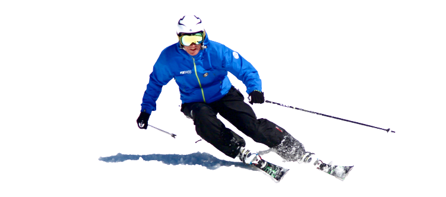
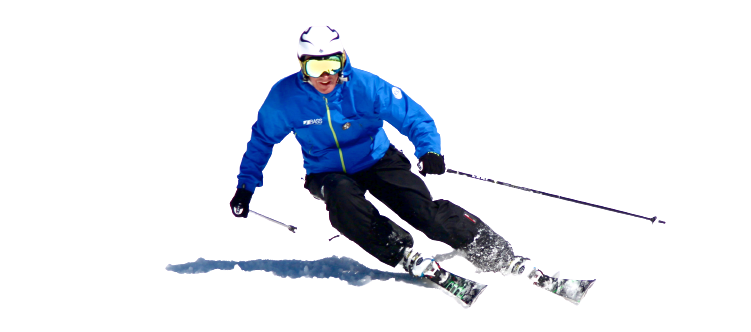

Samy's first parallax
Dum apud Persas, ut supra narravimus, perfidia regis motus agitat insperatos, et in eois tractibus bella rediviva consurgunt, anno sexto decimo et eo diutius post Nepotiani exitium, saeviens per urbem aeternam urebat cuncta Bellona, ex primordiis minimis ad clades excita luctuosas, quas obliterasset utinam iuge silentium! ne forte paria quandoque temptentur, plus exemplis generalibus nocitura quam delictis. Sed maximum est in amicitia parem esse inferiori. Saepe enim excellentiae quaedam sunt, qualis erat Scipionis in nostro, ut ita dicam, grege. Numquam se ille Philo, numquam Rupilio, numquam Mummio anteposuit, numquam inferioris ordinis amicis, Q. vero Maximum fratrem, egregium virum omnino, sibi nequaquam parem, quod is anteibat aetate, tamquam superiorem colebat suosque omnes per se posse esse ampliores volebat. Sed fruatur sane hoc solacio atque hanc insignem ignominiam, quoniam uni praeter se inusta sit, putet esse leviorem, dum modo, cuius exemplo se consolatur, eius exitum expectet, praesertim cum in Albucio nec Pisonis libidines nec audacia Gabini fuerit ac tamen hac una plaga conciderit, ignominia senatus. Dum apud Persas, ut supra narravimus, perfidia regis motus agitat insperatos, et in eois tractibus bella rediviva consurgunt, anno sexto decimo et eo diutius post Nepotiani exitium, saeviens per urbem aeternam urebat cuncta Bellona, ex primordiis minimis ad clades excita luctuosas, quas obliterasset utinam iuge silentium! ne forte paria quandoque temptentur, plus exemplis generalibus nocitura quam delictis. Sed maximum est in amicitia parem esse inferiori. Saepe enim excellentiae quaedam sunt, qualis erat Scipionis in nostro, ut ita dicam, grege. Numquam se ille Philo, numquam Rupilio, numquam Mummio anteposuit, numquam inferioris ordinis amicis, Q. vero Maximum fratrem, egregium virum omnino, sibi nequaquam parem, quod is anteibat aetate, tamquam superiorem colebat suosque omnes per se posse esse ampliores volebat. Sed fruatur sane hoc solacio atque hanc insignem ignominiam, quoniam uni praeter se inusta sit, putet esse leviorem, dum modo, cuius exemplo se consolatur, eius exitum expectet, praesertim cum in Albucio nec Pisonis libidines nec audacia Gabini fuerit ac tamen hac una plaga conciderit, ignominia senatus. Dum apud Persas, ut supra narravimus, perfidia regis motus agitat insperatos, et in eois tractibus bella rediviva consurgunt, anno sexto decimo et eo diutius post Nepotiani exitium, saeviens per urbem aeternam urebat cuncta Bellona, ex primordiis minimis ad clades excita luctuosas, quas obliterasset utinam iuge silentium! ne forte paria quandoque temptentur, plus exemplis generalibus nocitura quam delictis. Sed maximum est in amicitia parem esse inferiori. Saepe enim excellentiae quaedam sunt, qualis erat Scipionis in nostro, ut ita dicam, grege. Numquam se ille Philo, numquam Rupilio, numquam Mummio anteposuit, numquam inferioris ordinis amicis, Q. vero Maximum fratrem, egregium virum omnino, sibi nequaquam parem, quod is anteibat aetate, tamquam superiorem colebat suosque omnes per se posse esse ampliores volebat. Sed fruatur sane hoc solacio atque hanc insignem ignominiam, quoniam uni praeter se inusta sit, putet esse leviorem, dum modo, cuius exemplo se consolatur, eius exitum expectet, praesertim cum in Albucio nec Pisonis libidines nec audacia Gabini fuerit ac tamen hac una plaga conciderit, ignominia senatus. Dum apud Persas, ut supra narravimus, perfidia regis motus agitat insperatos, et in eois tractibus bella rediviva consurgunt, anno sexto decimo et eo diutius post Nepotiani exitium, saeviens per urbem aeternam urebat cuncta Bellona, ex primordiis minimis ad clades excita luctuosas, quas obliterasset utinam iuge silentium! ne forte paria quandoque temptentur, plus exemplis generalibus nocitura quam delictis. Sed maximum est in amicitia parem esse inferiori. Saepe enim excellentiae quaedam sunt, qualis erat Scipionis in nostro, ut ita dicam, grege. Numquam se ille Philo, numquam Rupilio, numquam Mummio anteposuit, numquam inferioris ordinis amicis, Q. vero Maximum fratrem, egregium virum omnino, sibi nequaquam parem, quod is anteibat aetate, tamquam superiorem colebat suosque omnes per se posse esse ampliores volebat. Sed fruatur sane hoc solacio atque hanc insignem ignominiam, quoniam uni praeter se inusta sit, putet esse leviorem, dum modo, cuius exemplo se consolatur, eius exitum expectet, praesertim cum in Albucio nec Pisonis libidines nec audacia Gabini fuerit ac tamen hac una plaga conciderit, ignominia senatus.